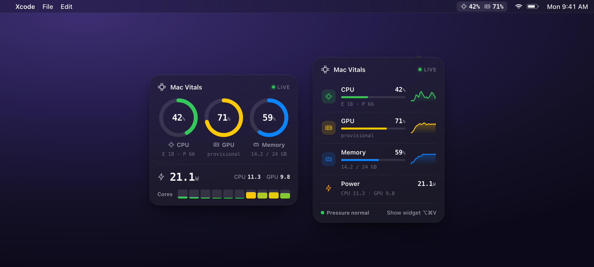
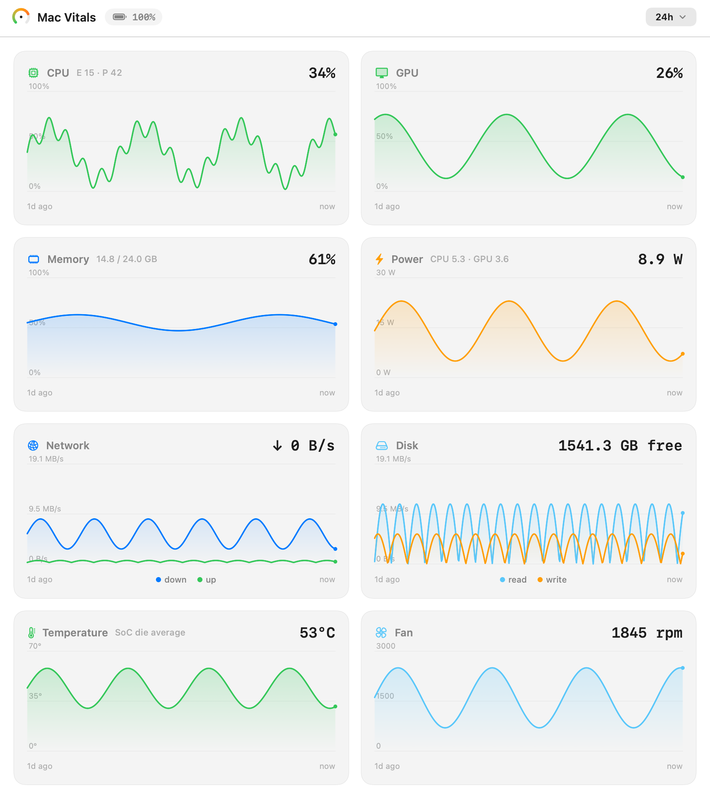

An open-source macOS menu bar system monitor for Apple Silicon. Live CPU, GPU, memory, power, temperature, and fan, with history you keep and an MCP server your coding agent can read. No password, no dependencies.

Mac Vitals reads it all as a normal user through Apple's IOReport interface. No sudo prompt, no helper daemon, no kernel extension.
Overall load plus the efficiency and performance clusters, split out, and every core.
Utilization from the hardware's performance-state residency, calibrated against powermetrics.
Memory used against total, and power in watts per rail, CPU and GPU, from the chip's energy counters.
Throughput up and down, read and write with free space, and charge.
SoC temperature and fan speed from the SMC, with task traces that measure what a build cost.
Charted from one minute to a year, persisted to disk, so every range survives a quit.
Every metric charted over a range you pick, plus year-to-date. Three resolutions kept on disk, so the long views fill in over time instead of starting blank.

Needs macOS 14 or later on Apple Silicon and the Xcode Command Line Tools. Not yet notarized, so build from source for now.
Mac Vitals runs as a read-only Model Context Protocol server over stdio. Your coding agent can read the machine, and wrap its own build in a trace to see what it cost.
get_vitals and get_vitals_historystart_trace and stop_trace for energy and costA free and open-source alternative to iStat Menus, and a native-feeling companion to stats and macmon. It competes on the native look, the floating widget, and an interface an agent can read.
| Mac Vitals | stats | macmon | iStat Menus | |
|---|---|---|---|---|
| Reads without sudo | ✓ | ✓ | ✓ | ✓ |
| Native menu-bar item | ✓ | ✓ | – | ✓ |
| Floating desktop widget | ✓ | – | – | partial |
| Agent-readable (MCP) | ✓ | – | – | – |
| Zero dependencies | ✓ | ✓ | ✓ | – |
| Open source | ✓ | ✓ | ✓ | – |
| Price | free | free | free | paid |